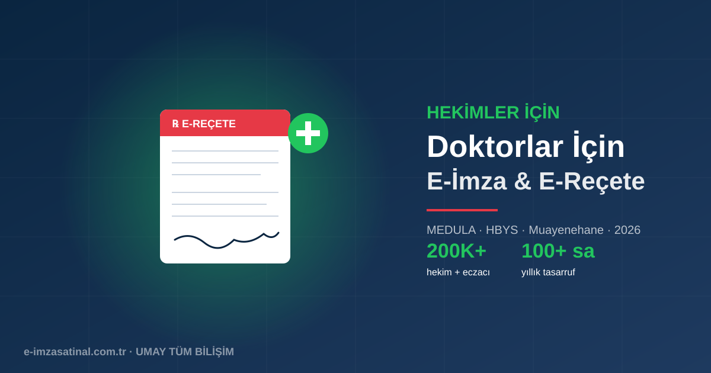

Doktorlar İçin E-İmza Neden Zorunlu?
Türkiye'de hekimlik mesleğinin dijital dönüşümü e-Reçete, e-Rapor, MEDULA ve Hekim Bilgi Yönetim Sistemi (HBYS) ile hızla ilerledi. 2026 itibarıyla bir doktorun günlük mesleki rutinini e-imza olmadan sürdürmesi pratikte imkansız.
Sadece devlet hastanesi hekimleri değil, özel muayenehane sahipleri, üniversite hastanelerinde çalışan akademisyenler ve serbest çalışan uzmanlar da e-imzaya bağımlıdır. Muayene sonrası hasta reçetesi, tetkik onayı, sevk kağıdı, rapor düzenleme — hepsi e-imza ile atılır.
Doktorlar E-İmzayı Hangi Sistemlerde Kullanır?
- E-Reçete Sistemi: Hasta adına elektronik ortamda reçete yazma. Reçete SGK'ya iletilir, eczane e-imzalı reçeteyi görür.
- MEDULA: SGK'nın sağlık hizmetleri portalı. Hastane fatura kesimi, hasta takibi, provizyon işlemleri.
- E-Rapor: İş göremezlik raporu, sağlık raporu, sürücü belgesi raporu gibi resmi belgelerin dijital düzenlenmesi.
- HBYS entegrasyonu: Hastane bilgi yönetim sistemlerinden dış sistemlere veri iletimi.
- E-Sevk: Hasta sevk işlemleri.
- Akademik yayın imzalama: ÜAK başvuruları, dergi makale imzaları, tez teslimi.
- Muayenehane e-Fatura: Özel muayenehanenin GİB nezdinde faturalarını kesme (mali mühür ile).
- KVKK VERBİS: Muayenehane sahibi olarak veri sorumluları siciline kayıt.
E-Reçete Sistemi Nasıl Çalışır?
Türkiye'de Sağlık Bakanlığı Reçete Bilgi Sistemi aracılığıyla düzenlenen tüm reçeteler elektroniktir. Süreç şu şekilde işler:
Muayene
Doktor hastayı muayene eder, tanı koyar, ilaç veya tetkik reçetesi yazacaktır.
Sistem Girişi
HBYS veya Sağlık Bakanlığı portalından e-imza ile giriş yapılır (Chrome/Edge + AKİS + tarayıcı eklentisi).
Reçete Yazımı
İlaç adı, doz, süre bilgileri sisteme girilir. Etkileşim uyarıları otomatik çıkar.
E-İmza Onayı
Reçete e-imza ile onaylanır. PIN girilir, kriptografik imza atılır. SGK'ya iletilir.
Eczane Erişimi
Hasta eczaneye TC kimlik numarası ile gider. Eczaneci SGK sistemine bağlanıp e-reçeteyi görür ve ilaçları verir.
MEDULA ve E-İmza
MEDULA, SGK'nın sağlık hizmet sağlayıcıları için portal sistemidir. Hastane, poliklinik, muayenehane, laboratuvar tüm sağlık kuruluşları MEDULA üzerinden fatura keser, hasta bilgisi girer.
MEDULA'ya e-imza ile giriş zorunludur ve tüm fatura düzenlemeleri e-imzalı yapılır. Muayenehane sahibi doktorlar için MEDULA + Mali Mühür kombinasyonu gerekir:
- E-İmza: MEDULA girişi, hekim kimlik doğrulama
- Mali Mühür: Muayenehanenin e-Fatura kesimi
Diş Hekimleri ve Eczacılar İçin E-İmza
Diş hekimleri e-imzayı özel muayenehane işlemleri, TDB (Türk Dişhekimleri Birliği) portalı, e-reçete ve tedavi planı için kullanır. Eczacılar ise SGK provizyon sistemi, e-reçete karşılama, ilaç geri ödeme işlemleri ve TEB (Türk Eczacıları Birliği) portalı için e-imzaya ihtiyaç duyar.
Önerilen Paket: Doktorlar İçin
Bir doktorun tipik ihtiyacı:
Senaryo 1: Devlet Hastanesi/Üniversite Doktoru
- 1 × Bireysel E-İmza (3 yıllık) — hastane HBYS, e-reçete, MEDULA, akademik yayın için
- Yıllık maliyet: ~1.250 TL
Senaryo 2: Özel Muayenehane Sahibi
- 1 × Bireysel E-İmza (3 yıllık) — kendi mesleki işlemleri için
- 1 × Mali Mühür — muayenehane e-Fatura kesimi için (GİB'den alınır)
- 1 × KEP hesabı — hasta yazışmaları, hukuki bildirimler için önerilir
- Yıllık maliyet: ~2.500 TL
Senaryo 3: Grup Muayenehanesi (Birden Fazla Doktor)
- Her doktor için bireysel e-imza
- Merkez muayenehane için 1 mali mühür
- Muayenehane adına 1 KEP
Doktorlar İçin Sık Sorulan Sorular
Asistan hekim e-imza alabilir mi? Evet. Asistan hekimlerin de kendi adlarına e-imza alıp HBYS ve akademik işlemler için kullanmaları gerekir.
Kadrolu ve sözleşmeli çalışıyorum, iki tane e-imza mı almalıyım? Hayır. Kişisel bir e-imza tüm sistemlerde kullanılır. E-imza kişiye aittir, iş yerine değil.
E-Reçete için hangi tarayıcı gerekli? Chrome, Edge veya Firefox. Detaylar için tarayıcı eklentisi rehberimize bakın.
Yurtdışı görevindeyken e-reçete yazabilir miyim? Evet, tarayıcı + AKİS + USB token ile herhangi bir bilgisayardan giriş yapılabilir. VPN veya sabit IP gerekmez.
PIN kilitlendi, hasta bekliyor, ne yapayım? PUK kodu ile açabilirsiniz. Detay için e-imza kayıp/hasar rehberimize bakın.
Maliyet-Fayda Analizi
Bir doktor yılda ortalama 3.000-5.000 reçete yazar. Kağıt reçete zamanında bir reçete için gereken süre 3-5 dakika. E-reçete ile bu 30-60 saniyeye iner. Yıllık tasarruf: 100+ saat mesai zamanı.
Bunun karşılığında yıllık ~1.250 TL e-imza maliyeti — doktorun bir haftalık kısmi mesaisinin bile altında. Belki de mesleki hayatın en yüksek getirili yatırımıdır.